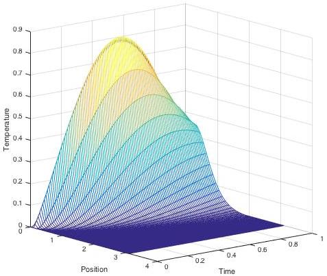
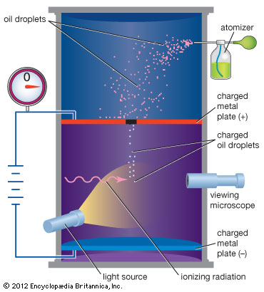
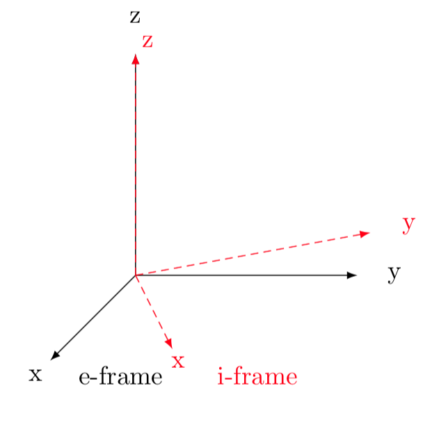
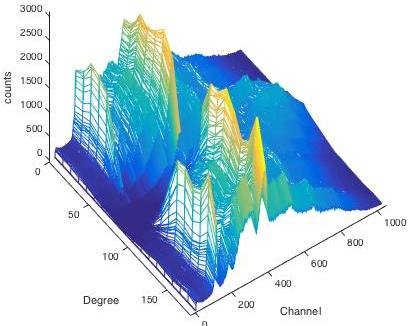
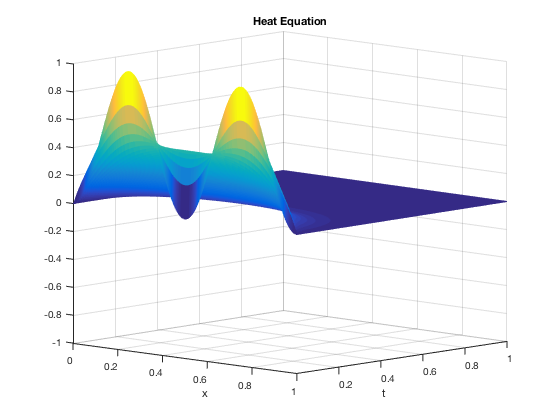
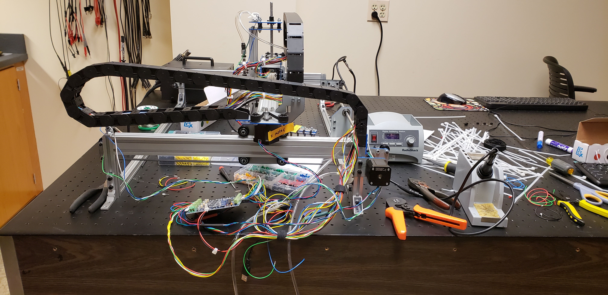

This lab was carried out to solve some partial differential equations numerically. Two different methods were used in this lab including, the Jacobi method and Gauss-Shield Method. When the partial differential equations is easy to solve and the inputs are minimal, the Jacobi method and the Gauss-Seidel method have essentially the same efficiency in their computation. However, with a longer computation the Gauss-Seidel method was found to be more efficient than the Jacobi method, with the Gauss-Seidel method have on average a 20% faster computation time than the Jacobi Scheme.
Projects

Partial Differential Equations Lab

Millikan Oil Drop Experiment
The Millikan oil drop apparatus is used to find the charge of electrons on a single oil droplet. A flashlight is mounted to the apparatus and used as a source of light in order to see the oil droplets inside the droplet viewing chamber. An atomizer filled with mineral oil is used to allow droplets to be inserted between the plates in the droplet viewing chamber. Once the droplets have been spotted, the plate charging switch is used to force the droplets up and down. Once an appropriate droplet is in control, the droplet can be measured in time. Using the viewing scope, the selected droplet is measured when falling due to gravity over a specific grid. The same is done when the droplet is forced up using the plate charging switch. With the data collected, the charge of an electron can be calculated. The resulting data shows that for the initial drop the charge is 4.32482 ∗ 10−19 ± 3.030177 ∗ 10−19C and the charge found after ionizing the 9.06303417 ∗ 10−19 ± 3.89455 ∗ 10−20C.

Reference Frames
Linear algebra has numerous applications that are essential to keep our technological world running. As of today, one of the biggest systems we take advantage of are satellite navigational systems. More specifically, the Global Positioning System (GPS) which is the American satellite navigational system and the first satellite system to be launched back in 1974. Millions of people each day use this system for means to find a quick get around, track transit schedules, and just an all around profound system that makes getting from point A to point B simplistic. However, we never stop to realize just how complex the mathematics and physics used in this system really are. To ensure that GPS is accurate general and special relativity has to be taken into account to fix the affects caused by special relativistic time dilation. Without the time corrections the satellites would become considerably off. Each day the satellites will gain 45 microseconds while the clocks on earth will fall behind by 7 microseconds, the difference of the two tell us that the satellites will be off by 38 microseconds. This is a considerably low amount of time, however, over the span of one day the calculations become so inaccurate that a calculated position on earth would be 10 kilometers off if general relativity was not taken into account [2]. Rendering this system completely useless, but the correct time is only one part of the problem. Knowing the location of the 31 satellites orbiting the globe are obvisouly essential in the calculation process. To determine a location on earth, the satellites need to know the location of other satellites around it. Thus, determining a location on earth using GPS is deeply rooted in navigational algorithms that involve coordinate frames and transformations of coordinates between them [1].

Quantum Information Science
A single photon count is carries out using properties of visible light. The polarizers in this experiment lower the amount of energy that enter the box. Using Malus law we were able to get the lowest amount of energy inside the box. By limiting the amount of energy in the box we were able to count very few photons. Adjusting power supply systems and the amplifier we were able the detect single photons and limit noise in the system.

Heat Equation
Partial Differential Equations (PDEs) are complex problems that are hard to solve analytically. Numerical methods are used to allow for solving these problems faster and also solving problems that can’t be done analytically. There are many different methods used to solve PDEs. The methods analyzed in this paper include an explicit method, implicit method, and the Crank-Nicolson method. The explicit method is an unstable method when the proper conditions are not satisfied. Both the implicit method and the Crank-Nicolson method are always stable when D > 0, h > 0, and k > 0. However, the implicit methods truncation error grows faster than the Crank-Nicolson method. The methods with the best run time are the explicit method, implicit method, and Crank-Nicolson method, respectively.
Nixie Tube Clock
{kind=link}
The nixie tubes name can be dated back to the first experiment with these displays. During research, these tubes were labeled as Numeric Indicator Experimental No. 1, or NIX I for short. The team later started to refer to the tubes as ”Nixie” and the name remained. The nixie tubes prime usage was back in the 1950’s but later to be passed by cheaper and better technology. Vacuum fluorescent displays (VFDs) replaced the nixie tube and soon after light-emitting diodes (LEDs) replaced (VFDs). While there are no real advantages anymore, one reason they were sought after was for their unique round digits. While digits with LEDs and VFDs have box digits that are harder to read especially in dark labs. Nixie tubes are also reliable and will last a very long time. These tubes manufactured in large quantities in the Soviet Union. It’s easy to confirm their reliance since these tubes work fine today 60 years after their manufacturing date. These tubes have been out of date for a while and can not be used with modern equipment since they require high-voltage. An low-voltage integrated circuit would have no use for a nixie tube. LEDs are cheaper to manufacture, are abundant, and overall a very useful light source with endless capabilities due to their design. While nixie tubes are outdated, they do make great electronics projects. People have created interesting projects such as clocks, calculators, and even a speedometer. However, the technology we have today is drastically better for many reasons. Makes these nixie tubes obsolete and rendering them only to serve an aesthetic purpose.

Pick and Placer
CNC pick in placer, currently building and updating...